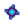
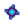

Pfanne
| Geringer Artikelumfang
Geringer Artikelumfang Dieser Artikel ist aus folgendem Grund als unvollständig gekennzeichnet:
|
| Kupferpfanne | |
| Information | |
| Kosten: |
|
| Verkauft durch: | Anglerbedarf |
Die Kupferpfanne ist ein Werkzeug, welches genutzt wird um Erz (oder andere Gegenstände) aus Flüssen, Seen und Teichen zu sammeln. Man erhält sie, nachdem der Glitzernde Fels an der Brücke im Westen des Mineneingangs entfernt wurde und stattdessen ein kleiner Wasserfall dort entspringt. Dies erreicht man dadurch, dass die Fischbündel vervollständigt oder die "Mineralienwäsche" aus dem Joja Gemeindeentwicklungsformular für  20.000 G gekauft wurde.
20.000 G gekauft wurde.
Erwerb
Gehe an einem beliebigen Tag zum Wasserfall, nachdem der Glitzernde Fels entfernt wurde. Es wird eine Zwischensequenz abgespielt, in der Willy vom Verschwinden des Felsens berichtet. Er deutet auf das Schimmern im Wasser welches bedeutet, dass der Fluss Erz und Mineralien aus den Bergen gewaschen hat. Dann gibt er dir seine Ersatzkupferpfanne aus seinem Rucksack.
Danach können Kupferpfannen beim Anglerbedarf für  2.500 G gekauft werden.
2.500 G gekauft werden.
Benutzung
Halte Ausschau nach dem Schimmern, welches zufällig in jedem Fluss, See oder Tümpel auftreten kann. Wenn du dort heran kommst, betätige die linke Maustaste. Das Nutzen der Kupferpfanne verbraucht keine Energie.
Sie kann auch als Hut aufgesetzt werden, indem sie vom Inventar auf den Hut-Platz zieht.
Erhaltene Gegenstände
Du erhältst immer eine zufällige Anzahl eines Erzes durch das Schwenken der Pfanne. Du könntest zusätzlich eine zufällige Menge Kohle, einen Edelstein, ein Mineral oder eine zufällige Anzahl Omni-Geoden erhalten. Es folgt eine komplette Liste der Gegenstände, die durch das Pfanneschwenken erhalten werden können.[1]
Wie ersichtlich erhöht Glück die Wahrscheinlichkeit Iridiumerz anstelle von Kupfererz und Diamanten anstelle von Kohle zu erhalten. Glück von Gerichtsbuffs erhöhen ebenfalls die Wahrscheinlichkeit einen Diamanten anstelle von Aquamarinen, Smaragden, Rubinen oder Topasen zu erhalten. Ganzzahlige Glückserhöhung von Gerichten erhöht die Wahrscheinlichkeit Erze zu finden um je 0,4% und 4% für alle anderen Gegenstände.
Erze
 Kupfererz (40% ∓ tägliches Glück, −Nahrungsbuff)
Kupfererz (40% ∓ tägliches Glück, −Nahrungsbuff)
 Eisenerz (35.9%)
Eisenerz (35.9%)
 Golderz (23.1%)
 Iridiumerz (1% ± tägliches Glück, +Nahrungsbuff)
Golderz (23.1%)
 Iridiumerz (1% ± tägliches Glück, +Nahrungsbuff)
Edelsteine
 Amethyst (1.6%, −Nahrungsbuff)
Amethyst (1.6%, −Nahrungsbuff)
 Aquamarin (1.6%, −Nahrungsbuff)
Aquamarin (1.6%, −Nahrungsbuff)
 Diamant (2% ± tägliches Glück, +Nahrungsbuff)
Diamant (2% ± tägliches Glück, +Nahrungsbuff)
 Smaragd (1.6%, −Nahrungsbuff)
Smaragd (1.6%, −Nahrungsbuff)
 Rubin (1.6%, −Nahrungsbuff)
Rubin (1.6%, −Nahrungsbuff)
 Topas (1.6%, −Nahrungsbuff)
Topas (1.6%, −Nahrungsbuff)
Andere
 Kohle (50% ∓ tägliches Glück,)
Kohle (50% ∓ tägliches Glück,)
 Erdkristall (4.9%)
Erdkristall (4.9%)
 Feuer-Quarz (4.2%)
Feuer-Quarz (4.2%)
 Gefrorene Träne (4.9%)
Gefrorene Träne (4.9%)
 Omni-Geode (26%)
Omni-Geode (26%)
Ingwerinsel
 Versteinerter Schwanz (20% im Fluss der Ausgrabungsstätte)
Versteinerter Schwanz (20% im Fluss der Ausgrabungsstätte)
 Taro-Knollen (20% im Westen, Süden und Südosten der Insel)
Taro-Knollen (20% im Westen, Süden und Südosten der Insel)
Hinweise
- Der Beruf Fährtenleser kann zum Aufspüren von Schimmernden Lichtern genutzt werden. Ein kleiner grüner Pfeil erscheint, wenn sich glitzernde Lichter außerhalb des Bildschirms befinden (nur auf der derzeitigen Kartenregion).
Referenzen
- ↑ Siehe Pan::getPanItems im Spielcode.
Geschichte
- 1.0: Eingeführt.
- 1.4: Kann jetzt im Mülleimer gelöscht werden. Kann bei Willys Anglerbedarf gekauft werden, nachdem die erste erhalten wurde. Kann jetzt als Hut verwendet werden.
- 1.5: Kann jetzt Verteinerten Schwanz (ein Auftragsgegenstand der Insel-Außenstelle) oder Taro-Knollen auf der Ingwerinsel finden.
| Werkzeuge | |
|---|---|
| Hofarbeit | Äxte • Gießkannen • Goldene Sense • Hacken • Mülleimer • Sense • Spitzhacken |
| Fischen | Bambusstange • Fiberglasangel • Iridiumangel • Krabbenreuse • Übungsangel |
| Andere | Auto-Streichler • Automatischer Greifer • Brutkasten • Einfülltrichter • Heizgerät • Kupferpfanne • Melkkübel • Schafschere • Straußenbrutkasten |